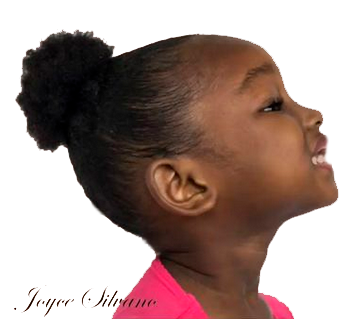
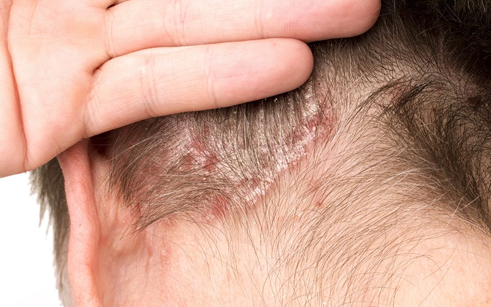
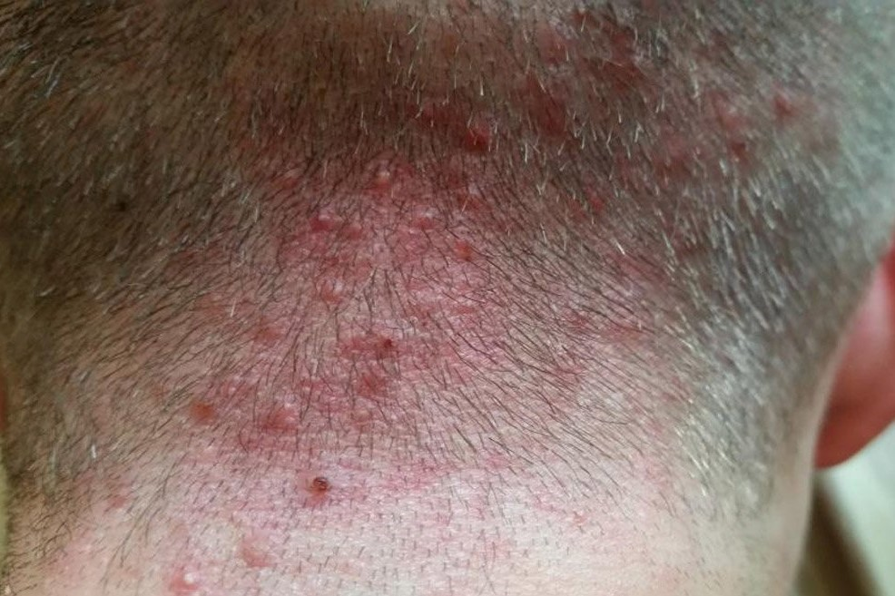
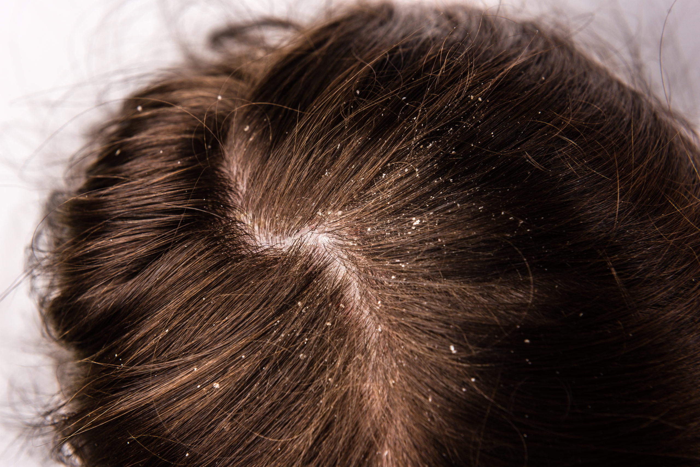
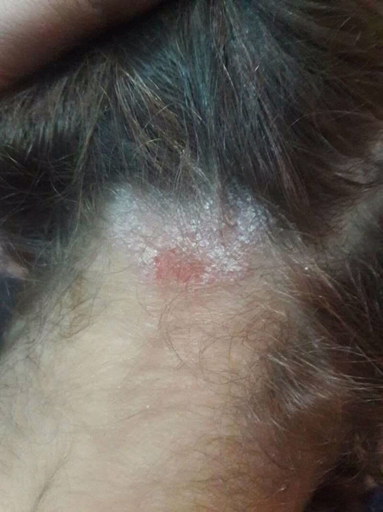

Tratamentos
Tratamento que visa baixar as cutículas e regular o PH do cabelo. Ajudando assim a reter água e tratamento. Indicado fazer a cada 30 dias.
Benefícios:
Regular o PH
Melhora a absorção
Devolve brilho e maciez
Técnica de tratamento que
hidrata e também nutri os
cabelos profundamente.
Indicado para todas
as curvaturas.
O ideal é fazer
uma vez por semana.
Benefícios:
Regular o PH
Melhora a absorção
Devolve brilho e maciez
É uma técnica de tratamento que serve para nutrir e fortalecer os fios, repondo a oleosidade necessária, que é perdida no dia a dia. É indicado para cabelos secos(porosos).
Benefícios:
Reduz a quebra
Diminui o frizz
Elimina os nós de fada
Combate o ressecamento e a porosidade
Toque mais suave
Mais brilho
Consiste na aplicação do vapor de ozônio, para o tratamento do couro cabeludo e restauração dos fios. Indicado para todos os tipos de curvaturas.
Benefícios:
Aumento do volume capilar
Estimulo no crescimento
Diminui o frizz
Maior maleabilidade dos fios
Combate da dermatite
seborreica
Garante mais brilho e maciez
Reconstrução dos fios
Estimulo da circulação
sanguínea
Potencializa o efeito das
máscaras de tratamento
Consiste em repor massa capilar, que perdemos no dia a dia , devido a exposição ao sol, químicas, temperaturas altas (chapinha, secador, babyliss), deixando mais poroso e quebradiço.
Benefícios:
Todo cabelo vai precisar de reconstrução em algum momento. O que vária é a necessidade e frequência. Em cabelos naturais(virgens), o ideal é a cada 30 dias, já cabelos com química, mechas, coloração ou tinturas, a cada 15 ou 20 dias. Muita atenção!!! Reconstrução em excesso faz tão mal quanto não fazer. Então cuidado com o tempo de intervalo entre um tratamento e outro.
Dermatites
ALOPÉCIA POR TRAÇÃO

O que é ?
Alopécia por tração é a perda de cabelo causada pela tração dos fios. Um dos maiores sintomas do problema é a formação de algumas falhas no couro cabeludo, principalmente na região das têmporas, nas áreas da franja, nuca e também atrás das orelhas.
mais
Como acontece a alopecia por tração?
A alopecia é uma condição que leva à perda de cabelo. O problema pode ser causado pela genética, mas outro fator que o desencadeia é a tração feita nos fios - seja pelo uso constante de penteados repuxados ou até pelo hábito de arrancar as madeixas devido a problemas emocionais, como o estresse, a depressão e a ansiedade. O problema costuma provocar grandes falhas na região, deixando o couro cabeludo à mostra.
Penteados apertados é o uso de megahair podem causar a alopecia por tração?
É verdade. A alopecia de tração está ligada à tração prolongada dos fios e à tensão do couro cabeludo com esse movimento. Sendo assim, aqueles penteados que são muito repuxados podem acabar gerando o problema. As falhas no cabelo acontecem devido à falta de elasticidade das fibras dos folículos pilosos, o que resulta no rompimento dos fios. O mesmo vale para as pessoas que colocam tranças, megahair ou passam longos períodos com as madeixas presas.
Como podemos tratar o problema?
Em primeiro lugar, é importante diagnosticar a alopecia de tração o mais cedo possível. Quando não conseguimos identificar o problema, a cicatrização dos folículos impede que novos fios cresçam e acaba enfraquecendo aqueles que ainda estão ali. O cenário pode piorar a queda de cabelo e deixar falhas no couro cabeludo ainda maiores. Para tratar o problema, é importante deixar que os fios relaxem e fiquem livres de qualquer tensão. Se o caso for mais grave e a doença estiver em um estágio avançado, procure um dermatologista ou terapeuta capilar.
PSORÍASE

A psoríase é uma doença crônica que atinge não apenas o couro cabeludo, mas também cotovelos e joelhos, entre outras partes do corpo. Sua causa está ligada à hereditariedade e ao sistema imunológico. Quando a psoríase se manifesta, ocorre a formação de placas avermelhadas, que descascam, de contornos bem definidos. Ao contrário do que algumas pessoas imaginam, a doença não é contagiosa.
FOLICULITE

A relação das doenças do couro cabeludo inclui a foliculite, uma inflamação nos folículos pilosos cujos principais sintomas são pele avermelhada, coceira e pequenas bolhas de pus. Em geral, a foliculite é causada pela bactéria Staphylococcus aureus (estafilococos), mas ela também pode ser de origem viral ou fúngica. A doença atinge todas as partes do corpo, exceto mucosas, palmas das mãos e plantas dos pés.
DERMATITE SEBORRÉICA

A dermatite seborreica ou seborreia é mais conhecida como caspa. Ela surge devido à mudança na produção de sebo pelas glândulas sebáceas, o que eleva a oleosidade do couro cabeludo. Por isso, a região atingida fica avermelhada, em placas ou crostas, e muitas vezes há coceira e descamação. O desequilíbrio na produção de classes de bactérias e fungos também causa a dermatite seborreica.
PITIRÍASE

A lista de doenças do couro cabeludo engloba a pitiríase, uma micose de origem fúngica. Chamada também de tínea capilar, esse tipo de infecção causa coceira e descamação, além de queda temporária do cabelo, em alguns casos. Os fungos causadores da pitiríase compõem a microbiota do couro cabeludo e são ativados devido a mudanças no pH da região, à sudorese em excesso e até mesmo ao estresse, entre outras razões.